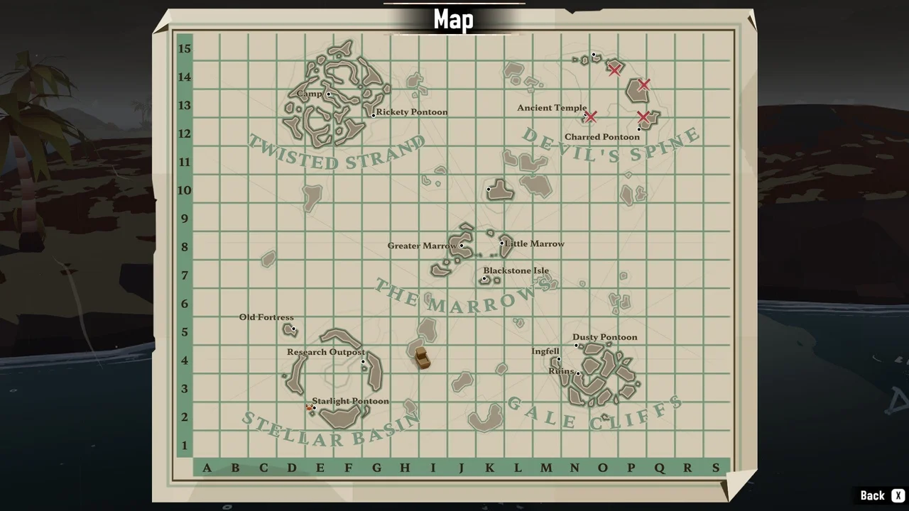
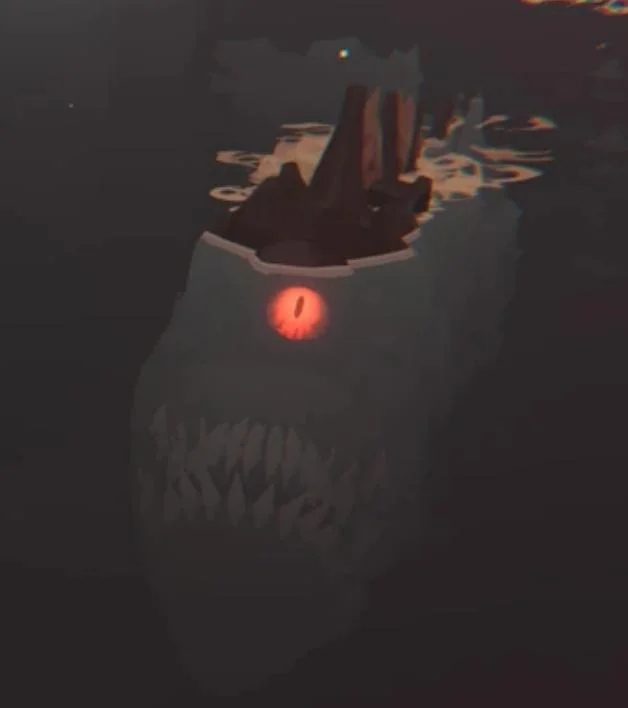
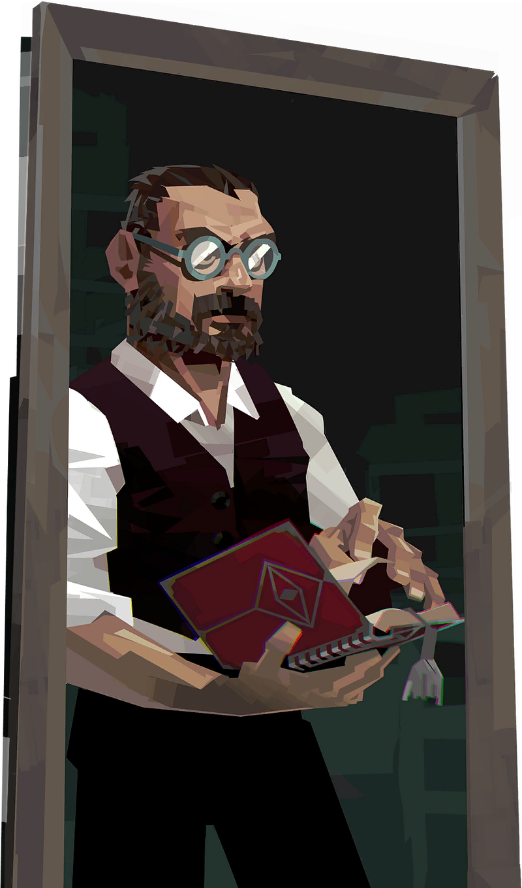

Dredge es un juego de pesca con elementos de terror donde exploras un océano lleno de misterios. Durante el día todo parece tranquilo, pero por la noche surgen criaturas y peligros ocultos.
En esta web encontrarás información sobre regiones, peces y mecánicas del juego.

Explora diferentes zonas del océano cada una con un misterio nuevo que resolver.

Captura más de 100 especies de peces y sus aberraciones especiales.

La noche es peligrosa con criaturas que pueden destruir tu barco.

Descubre secretos ocultos con una gran historia interesante.

Muestra de la musica del menu del juego:
Puedes cambiar el modo de la página:
Cambiar imagen del banner:
Pulsa el botón para ver tu ubicación aproximada: